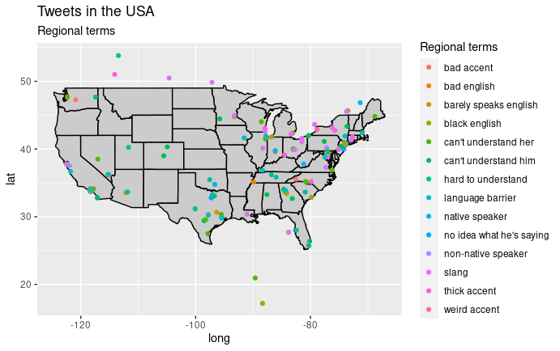

The purpose of this study is to explore the origins and characteristics of linguistic discrimination on social media. Twitter data was analyzed to determine the popularity of certain linguistic biases and the contexts in which they occur. This is an important topic to explore in order to take steps to eradicate such biases that affect many different populations in the United States. The data was explored using a sentiment analysis, geographic analysis, and an exploration of the popularity of certain biased terms. Our findings show that biased language occurs in regular, everyday contexts, and the contexts in which they occur are not dominated by words with negative sentiment. To continue, we found similar trends in popularity for some biased terms, but overall found more biased tweets to be favorited instead of retweeted. And finally, it was discovered that certain linguistic biases are more prevalent in specific regions of the United States.
Categorization and mental heuristics are fundamental and unavoidable aspects of human nature. However, these mental judgments often lead to very harmful and toxic stereotypes and biases that become integrated into societies (Beukeboom and Burgers 2017). The field of sociolinguistics studies language in society and how it interacts with characteristics such as gender, perceptions, attitudes, and geographic region (“Sociolinguistics | Linguistic Society of America,” n.d.). Important topics within sociolinguistics are the origins and characteristics of linguistic discrimination. Linguistic discrimination affects many individuals in the United States because they are treated differently based on how they speak. Many individuals hold biases towards people who do not speak English as their native language, or who speak with an accent. For example, previous literature has demonstrated a susceptibility of transcribers to certain accent-induced biases. Results show how a speaker’s perceived accent is a strong predictor for transcribed sounds by a native speaker (Sloos et al. 2019). To continue, another study explored linguistic discrimination in a workplace setting, and found that accents trigger biases of an interviewer due to perceived lower similarity (Deprez-Sims and Morris 2010).
Exploring the origins and characteristics of linguistic biases may help us eradicate linguistic biases by targeting certain geographic regions or social media platforms with educational information. In this study, I analyzed biased language from Twitter in hopes of understanding where certain biases are more prevalent, which biased terms are used most frequently, if the terms are used in a positive or negative context, and the popularity of certain biases on social media.
Data gathering, manipulation, and statistical analysis were conducted with the R Statistical Software (R Core Team 2016).
Data was collected from Twitter with an API token for the purpose of research. Twitter was chosen as the data source because it reflects informal, everyday, genuine thoughts, opinions, and potential biases of the general population. However, this is not a completely representative population to draw information from because there are many people in the United States that do not use Twitter. Details of the process of gathering data can be found under the acquire data and curate data tabs of the web page.
As the purpose of this research study was to explore available data, the statistical analysis focused on visualizing trends within our data set rather than testing hypotheses and making inferences. Specifically, I created cross-tabulations for sentiment analysis, bar plots with confidence intervals to analyze popularity of biased terms, and created a map of the United States to visualize geographic trends (Holtz, n.d.).
From creating a cross-tabulation of words found in biased tweets and their attached sentiments, saw a slight majority of negative words, 56%. Positive words occur less of the time, at 43%. However, since the percentages are relatively close to 50/50, this suggests that biased terms occur in contexts not completely dominated by negative or positive words, but in everyday language.
From this type of graph, we can be reasonably confident that there is a difference in how much a term is retweeted if the error bars do not overlap. For example, we can be reasonably confident that tweets with the phrase “black English” are retweeted way more than terms with the phrase “can’t understand her/him” and “does have an accent.” People also retweet tweets with the term “language barrier” more than tweets with the terms “no idea what he’s saying” and “non-native speaker.” The data also shows that there is not much of a difference in popularity between tweets with the terms “can’t understand him” and “can’t understand her,” which does not provide evidence for a link between gender discrimination and linguistic discrimination in this data set.
This barplot shows us similar things to what we found from the retweet analysis. We can be reasonably confident that tweets with the phrase “black English” are retweeted and also favorited way more than terms with the phrase “can’t understand her/him.” People also favorite tweets with the term “language barrier” more than tweets with the terms “no idea what he’s saying” and “non-native speaker.” The data shows that there are very similar trends of popularity of search terms between retweet count and favorite count.

Here we see a map of the United States with tweets plotted based on available geolocation, and the biased search term found in that tweet is color-coded based on the legend on the right side. First, we see a majority of biased tweets concentrated in the midwest and the east coast. This may be due to a larger concentration of tweets coming from this area in the first place, or it could be because individuals in those regions hold more linguistic biases.
We do see a second trend based on search terms. In the south west, we see more biased tweets with terms such as “can’t understand him or her,” “hard to understand,” and “language barrier.” This may suggest that individuals in the south west hold biases towards other accents or languages based on a lack of understanding or comprehension.
In the northeast and the midwest, we see more biased tweets with terms such as “native speaker,” “nonnative speaker,” “slang,” and “thick accent.” This may suggest that individuals in the northeast and midwest hold biases towards nonnative speakers of English or their native language. Linguistic discrimination in these regions may target nonnative speakers of English or people who speak with a thick accent who speak English as a second or third language. Also, the search term “slang” may suggest that individuals in the northeast and midwest hold biases towards informal and nontraditional language and label any of that language as “slang.”
This exploratory data analysis of biased tweets in the United States has given us important information about the nature of linguistic discrimination on social media. In everyday language, people may not explicitly say a discriminatory comment, as it is masked by other neutral or even positive words. Such comments may pass unnoticed and gain an audience on social media platforms like Twitter.
On Twitter, we can easily see how “liked” or popular a tweet is by the number of people who retweet it. We did discover different trends between favorite and retweet count because of the different implications of favoriting and retweeting a tweet, especially if the tweets contain biased language. Individuals may see a tweet and agree with it so they will favorite it, but subconsciously they may know it is discriminatory and won’t want to retweet it onto their own profile.
Throughout this analysis of popularity, we found that tweets with biased terms such as “hard to understand,” “black English,” and “language barrier” are favorited and retweeted more often than others. This finding may help people be more aware of certain terms that fly under the radar in casual informal conversations or texts, but actually have discriminatory meanings.
We also discovered certain geographic trends of linguistic biases. Understanding where biases are more common may help us begin to eliminate linguistic discrimination by targeting certain regions with certain information. In the south west region of the United States, biased language centered around a lack of understanding and comprehension. However, in the northeast and midwest, biased language is targeted towards nonnative speakers of English and informal, nontraditional forms of English.
In concluding this analysis of linguistic bias on social media, it is important to acknowledge the vast amount of work there is left to be done in this field. This study does add important ideas and possible explanations for origins of certain linguistic biases, but this is an ongoing exploration that requires major societal effort. Many authors and linguists have researched this topic and begun to list possible solutions. For example, actively calling out biased language we see on social media can have major impacts in combating biased comments and ideologies (“How to Stop Linguistic Discrimination,” n.d.).